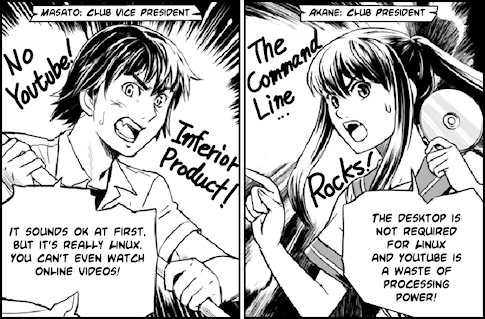

A(z) „humor” kategória bejegyzései
Hajnalban kaptam ezt a mailt:
Itt a vilag legjobb jateka. Ennyi. Kesz. Abba lehet fejezni a jatekfejlesztest ezutan.
A jatek cime Desert Bus. Jol jegyezzetek meg ezt a nevet.
Egy buszt kell elvezetni Arizonabol Nevadaba egy nyilegyenes uton valos idoben (nyolc oraig tart az ut) aztan VISSZA. A busz enyhen jobbra tart, ezert vegig ott kell ulni, es kanyarodni vele, hogy ne menjen le az utrol. Ez utobbi esetben az arokba szalad, es visszavontatjak Arizonaba. Termeszetesen ezt is valos idoben.
Itt a link, jatsszatok!
Itt a leiras, addig is.
http://desertbus.org/the-rules-of-desert-bus/
Mondom, lehet, hogy ez csak nekem vicces, de en majdnem megfulladtam a rohogestol. Baldur’s Gate. Lofasz.
Review:
(…)
Ezért szeretem az SF-t. Olvasni is, írni is. A sci-fi író nem csak lehetőségeket lát meg, hanem vad lehetőségeket. Nem egyszerűen abból indul ki, hogy „Mi lenne, ha…”, hanem abból, hogy „Te jó Isten, mi lenne, ha…” Téboly és hisztéria. Jönnek a marslakók. Egyedül Mr. Spock nyugodt. Ezért lett amúgy Spock akkora kultuszfigura; segít megnyugodni a káoszban is. Ellensúlyozza az SF-írók hajlamát a lehetetlen ötletek elképzelésére.
KIRK (őrjöngve): Spock, mindjárt felrobban az Enterprise!
SPOCK (higgadtan): Negatív, kapitány; csak meghibásodott egy biztosíték.
Spocknak mindig igaza van, akkor is, ha éppen téved. A hanghordozása, a természetfeletti józansága; ő nem olyan ember, mint mi; ő egy isten. Isten beszél így; ezt mindenki ösztönösen megérzi. Ezért van az hogy Leonard Nimoy a narrátora az áltudományos tévéműsoroknak. Nimoy képes bármit hihetően előadni. A kutatás folyhat egy elveszett gomb vagy egy elefánttemető után, Nimoy lazán elcsendesíti minden kétségünket és félelmünket. Elfogadnám pszichoterapeutának; a hajamat tépve rohannék be hozzá, a szokásos őrült marhaságaimmal, és ő megszabadítana ezektől.
PHIL (eszét vesztve): Leonard, ránk zuhan az ég!
NIMOY (higgadtan): Negatív, Phil; csak meghibásodott egy biztosíték.
És máris rendbe jönnék, helyreállna a pulzusom, és folytathatnám a munkát a regényemen, amivel a határidőhöz képest már három év lemaradásban vagyok.
Mostanában nincs túl sok időm – tudom, tudom, mindig ez a kifogás. Arra azért van időm, hogy a következő videót kiposztoljam.
El kell árulnom, hogy oda vagyok a stop-motion videókért, és ma láttam is egy nagyon jót.
Kedves, aranyos, nyugis. És jó a zenéje is. :)
Masaru Daisatô egy majdnem átlagos, 30-as, 40-es éveiben járó japán férfi. Csak azért a majdnem, mert ő Dai-Nipponjin, azaz a legnagyobb japán! A munkája, hogy az országban fel-felbukkanó hatalmas szörnyek ellen harcoljon. Felmerül a kérdés, hogy egy egyszerű ember, hogy a fenébe tudja felvenni a harcot az órásszörnyekkel. A válasz egyszerű: elektrosokk hatására gigantikusra nő, és egy tíz emeletes vasrúddal veri szét ellenfelei fejét.

Ennyit a sztoriról, nem akarok minden poént előre lelőni. Majdnem mindent egy nagyon érdekes, dokumentumfilmes szemszögből látunk. Daisatô mindennapjait egy forgatócsoport követi nyomon, interjúk és életszagú jelenetek segítenek megismerni a főhőst. Egyedi hangulatot kölcsönöz a filmnek a sok kézikamerás felvétel, és ehhez képest hatalmas váltást jelentenek a harci jelenetek teátrális kidolgozása. Meg kell jegyeznem, hogy a CGI nem teljesen élethű, de ez engem egyáltalán nem zavart, sőt, a filmnek jót is tesz ez a rajzoltabb hatás.
A film, nem jut eszembe hirtelen jobb jelző, eléggé elborult és ez a vége felé csak fokozódik. Olykor morbid, és eszméletlenül jó poénok vannak benne. Az utolsó öt percben folyamatosan röhögtem, fájt is a rekeszizmom a végén. Emlékszem Red arcára kiült a KERNEL PANIC.
A trailert hagytam a legvégére, mert igaz, hogy a filmből van összevágva, de egyáltalán azt adja vissza, amit az ember kap; szerintem teljesen másnak mutatja be, mint ami. Trailernek nagyon ütős, de ehhez a filmhez nem illik, amúgy odabaszós és ezért megtekintése mindenképp ajánlott.
Sajnos a Titanic filmfeszten kihagytam a vetítést, lázas voltam akkor. Megérte bepótolni, mert ez nálam bekerült az alapművek közé. Szerezzétek be, nézzétek meg! Fantasztikus élményt nyújt ez a film, melynek írója, rendezője és egyben főszereplője Hitoshi Matsumoto.

Az alábbi trailert Alex Cornell és Philip Mills követte el. Megvan benne a Wes Anderson filmek hangulata, de leginkább a Royal Tenenbaums és a Life Aquatic with Steve Zissou hatását éreztem. Kiváló munka, Futura Bold és Devo – Gut Feeling.
Hajnalban a HUP Fun fórumát olvasgattam, mikor felfigyeltem egy mangára. Kérdeztem is magamtól, hogy milyen kocka manga lehet a HUP fórumon? Klikkeltem, olvastam, röhögtem. Kellemesen csalódtam az Ubunchu! mangában.

Ez a rövid, mindössze tíz oldalas manga igazi japán humorral meséli el egy iskolai számítógépes klub oprendszer választási mizériáját. Garantált nevetés. Szerencsére nem csak japánul érhető el, ezen a linken kb. tíz nyelven olvasható a manga, köztük magyarul is.
Mindig tudtam, hogy a Novellnél vannak érdekes arcok, ez most végleg bebizonyosodott. Ilyen frankó zenés, linuxos klipet még nem láttam. Mega Chip és Little J dala überzsír!
A bábok, a SUSE Linux 11-es liftajtó, a szöveg és a zene is felszabadító. Tavasz van, Húsvét van, pont ez kellett nekem. :) Részlet a dalszövegből:
…and GIMP for your graphics
What’s GIMP?
It’s the tool that you used to photoshop a muscley bod
on your pics then you posted them online.
No no no no no man,
I’ve just been working out like all the time.
Vélemény? Hülye, aranyos, laza, void *? Szerintem szuper. Szóljatok!
(via HUP)
Az alábbi videót a Shintaro Kago készítette. Három nap alatt 6 órát aludtam, kissé fáradt és szétszórt vagyok. Egyszerűen ledöbbentett ez a videó, hirtelen röhögni kezdtem, furcsa reakciók sorát tapasztaltam magamon. Már-már azt hittem, hogy hallucinálok, mikor a videóban…
Az első reakciód írd be a kommentekhez. Shintaro Kago többi videóját is bátran ajánlom, mivel azok is igen szellemesek. Az Attack of the anteater’s tongue és a Terror of olympic game című művei igazi gyöngyszemek.
Már tíz éve nem láttam az eredeti Star Trek sorozatot, most pedig visszajött. Digitálisan felújítva stb. A reklám nekem nagyon bejött, egyszerűen hangulata van!
Itt hagyom James T. Kirk kapitányt és Mr. Spock-ot, hogy villogjanak, mert ők igazán funky-k. :)